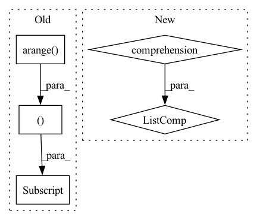

Pattern ID :12683

Before Change
max_prediction_length = x["decoder_lengths"].max()
assert x["encoder_lengths"].min() > 0, "Encoder lengths of at least 1 required to obtain last value"
last_values = x["encoder_target"][torch.arange(x["encoder_target"].size(0)), x["encoder_lengths"] - 1]
prediction = last_values[:, None, None].expand(-1, max_prediction_length, self.hparams.output_size)
return dict(prediction=prediction)
def _step(self, batch, batch_idx):
After Change
Dict[str, torch.Tensor]: netowrk outputs
if isinstance(x["encoder_target"], (list, tuple)): // multiple targets
prediction = [
self.forward_one_target(
encoder_lengths=x["encoder_lengths"],
decoder_lengths=x["decoder_lengths"],
encoder_target=encoder_target,
)
for encoder_target in x["encoder_target"]
]
else: // one target
prediction = self.forward_one_target(
encoder_lengths=x["encoder_lengths"],
decoder_lengths=x["decoder_lengths"],
In pattern: SUPERPATTERN
Frequency: 3
Non-data size: 5
Instances
Fragment ID: 42955951
Project Name: jdb78/pytorch-forecasting
Commit Name: 69c507ce117faeb3796b8b7cc657099c16c6ac25
Time: 2021-07-07
Author: beitner.jan@bcg.com
File Name: pytorch_forecasting/models/baseline.py
M Class Name: Baseline
N Class Name: Baseline
M Method Name: forward(2)
N Method Name: forward(2)
M Parent Class: BaseModel
N Parent Class: BaseModel
M File Name: pytorch_forecasting/models/baseline.py
N File Name: pytorch_forecasting/models/baseline.py
M Start Line: 33
M End Line: 36
N Start Line: 43
N End Line: 58
'>
Before Change
layer = self.layers
elif layer > self.layers:
raise ValueError(f"Number of layers specified ({layer}) exceed layers in model ({self.layers})!")
representations = hidden_states[torch.arange(num_inputs)[:, None], query_idx].mean(1)
else:
representations = list(map(lambda x: x[torch.arange(num_inputs)[:, None], query_idx].mean(1), hidden_states))
After Change
elif layer > self.layers:
raise ValueError(f"Number of layers specified ({layer}) exceed layers in model ({self.layers})!")
// representations = hidden_states[torch.arange(num_inputs)[:, None], query_idx].mean(1)
representations = torch.stack([hs.squeeze()[idx[0]:idx[1]].mean(0) for hs, idx in zip(hidden_states.split([1] * num_inputs), query_idx)])
return representations
'>
Fragment ID: 42955950
Project Name: kanishkamisra/minicons
Commit Name: b9f76e2dfc167677a5e1a4877b8bc76799a01974
Time: 2021-08-21
Author: menogetusername@gmail.com
File Name: minicons/cwe.py
M Class Name: CWE
N Class Name: CWE
M Method Name: extract_representation(3)
N Method Name: extract_representation(3)
M Parent Class: object
N Parent Class: object
M File Name: minicons/cwe.py
N File Name: minicons/cwe.py
M Start Line: 109
M End Line: 132
N Start Line: 110
N End Line: 132
'>
Before Change
elif layer > self.layers:
raise ValueError(f"Number of layers specified ({layer}) exceed layers in model ({self.layers})!")
representations1 = hidden_states[torch.arange(num_inputs)[:, None], query_idx1].mean(1)
representations2 = hidden_states[torch.arange(num_inputs)[:, None], query_idx2].mean(1)
else:
representations1 = list(map(lambda x: x[torch.arange(num_inputs)[:, None], query_idx1].mean(1), hidden_states))
representations2 = list(map(lambda x: x[torch.arange(num_inputs)[:, None], query_idx2].mean(1), hidden_states))
After Change
elif layer > self.layers:
raise ValueError(f"Number of layers specified ({layer}) exceed layers in model ({self.layers})!")
representations1 = torch.stack([hs.squeeze()[idx[0]:idx[1]].mean(0) for hs, idx in zip(hidden_states.split([1] * num_inputs), query_idx1)])
representations2 = torch.stack([hs.squeeze()[idx[0]:idx[1]].mean(0) for hs, idx in zip(hidden_states.split([1] * num_inputs), query_idx2)])
else:
representations1 = list(map(lambda x: torch.stack([hs.squeeze()[idx[0]:idx[1]].mean(0) for hs, idx in zip(x.split([1] * num_inputs), query_idx1)]), hidden_states))
representations2 = list(map(lambda x: torch.stack([hs.squeeze()[idx[0]:idx[1]].mean(0) for hs, idx in zip(x.split([1] * num_inputs), query_idx2)]), hidden_states))
'>
Fragment ID: 42955947
Project Name: kanishkamisra/minicons
Commit Name: b9f76e2dfc167677a5e1a4877b8bc76799a01974
Time: 2021-08-21
Author: menogetusername@gmail.com
File Name: minicons/cwe.py
M Class Name: CWE
N Class Name: CWE
M Method Name: extract_paired_representations(3)
N Method Name: extract_paired_representations(3)
M Parent Class: object
N Parent Class: object
M File Name: minicons/cwe.py
N File Name: minicons/cwe.py
M Start Line: 151
M End Line: 170
N Start Line: 151
N End Line: 170